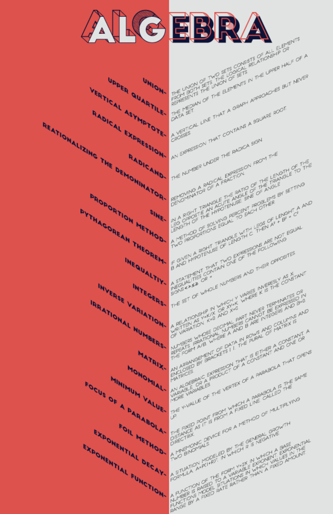
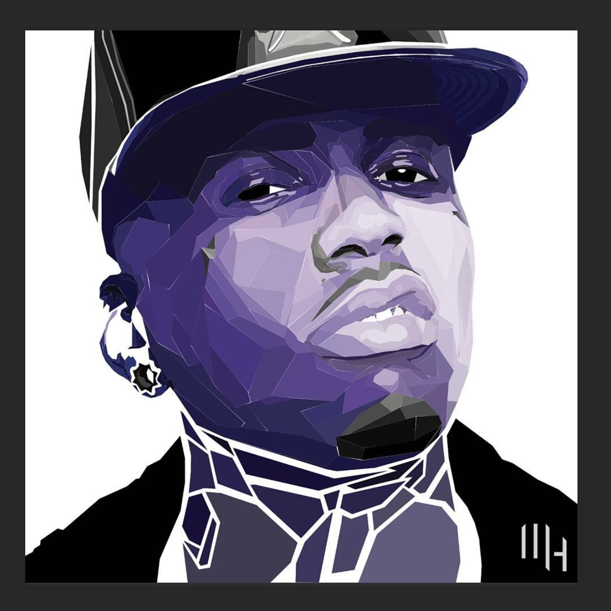
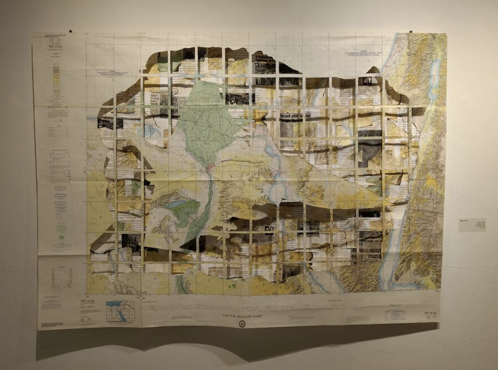
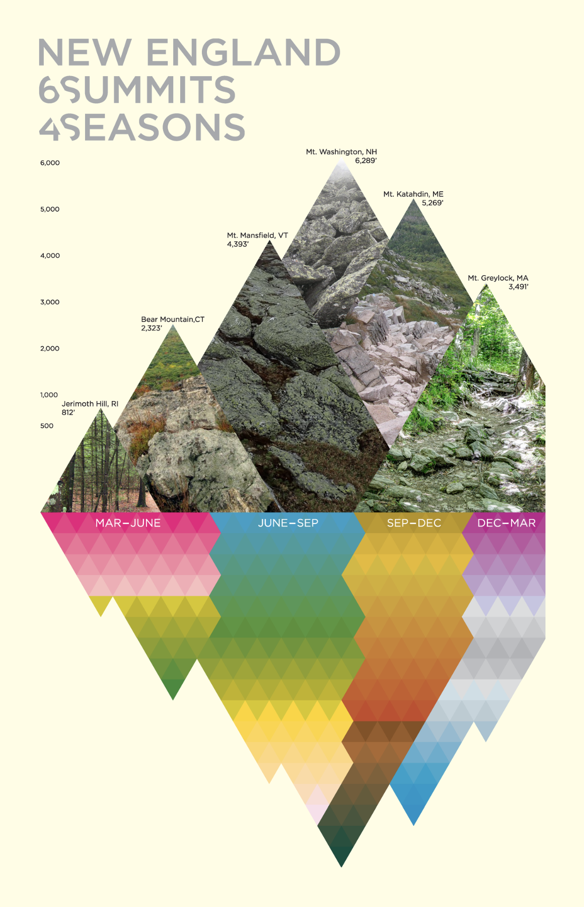
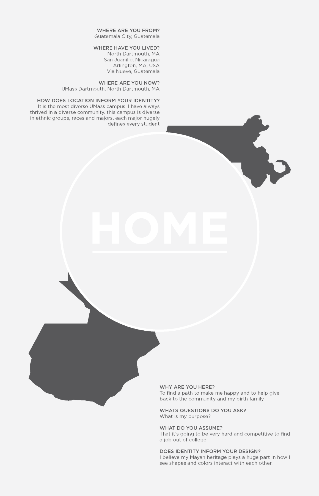
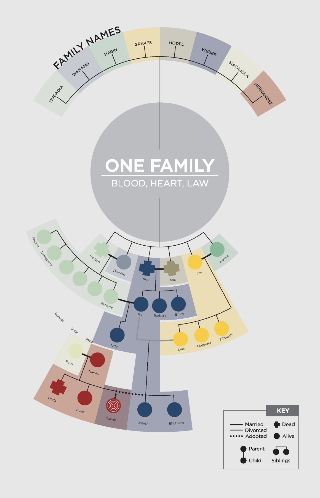
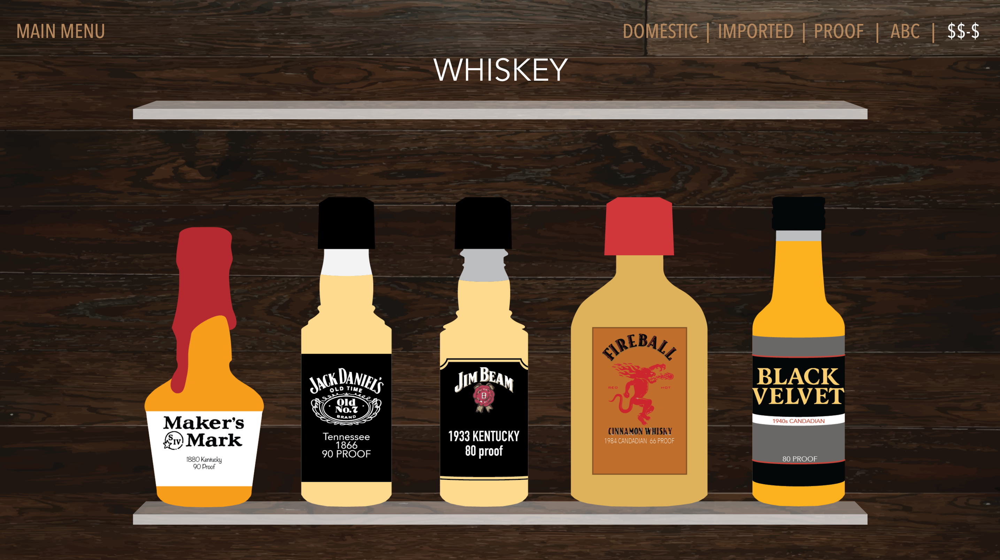
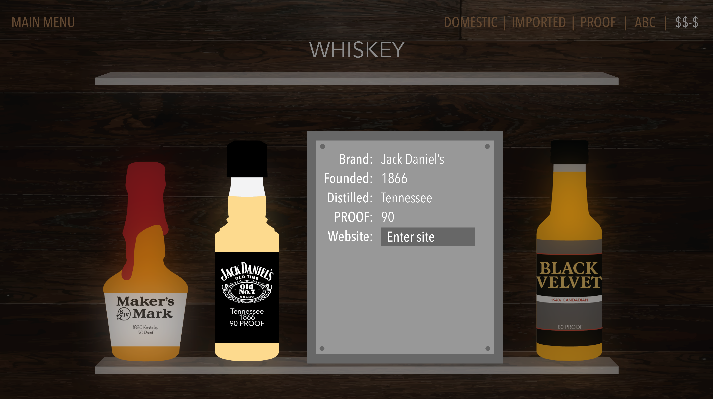
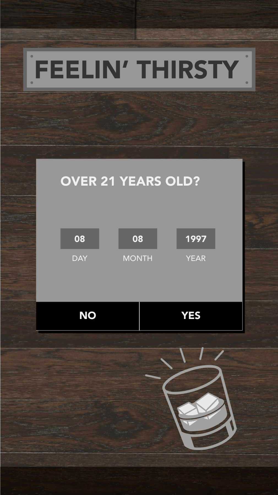
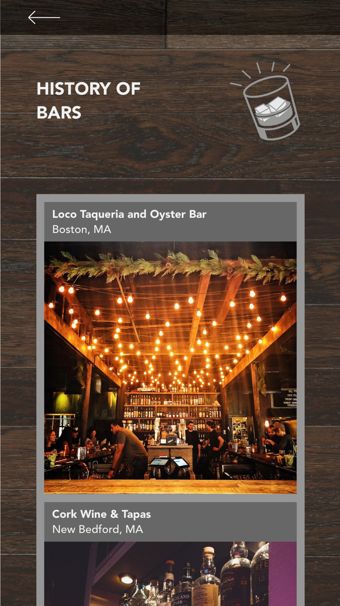

-

The Return of the King (La Vuelta Del Rey)
High School 12.16.2013This assignment was for my Spanish final in my sophomore year. Write a ten sentence summary in Spanish of the movie.
-

Honors Algebra Extra Credit
High School 4.12.2016The extra credit was assigned to be related to my vocational major and Algebra vocabulary words.
-

Kid Ink Portrait
Digital Essentials 10.12.2016I designed this geometric protrait to mimic a style I saw of a portait of Chance the Rapper.
-

Syria Bombing
2D Form & Space 10.24.2016The assignment was to use the map and we did. We went nuts with it. My team of four researched things that had to do with the area the map displayed. The most centered region was the Middle East. We thought it was appropriate to depict what was happening in the region at the time.
-

Basement Kids
Structural Drawing Final 4.28.2017This piece was a final for one of my foundation courses in freshman year of college. I had to draw part of the building with charcoal to the best of my abilities. The hardest part was drawing the inside of the elevator because it was always in use.
-
The Pencil
Intro to Graphic Design 10.20.2017I am a huge fan of Shepard Fairey and the assignment was to design a poster of something found in my backpack.
-

6 Summits Within 4 Seasons
Intermediate Typography 11.15.2017The class started with painting four palletes representing the four seasons of New England. Next, to design an infographic of something iconic in New England. I did a lot of hiking growing up and I've been on the Appalachian Trail so I thought it was fitting. Then I had to combine the colors and the infographic
-
 
Roots Grow Deep
Intermediate Typography 11.29.2017This project shows my roots and my complicated family growing. I have a lot of interweaving family I thought I would design my family tree similar to a Game of Thrones family tree.
-
Bodoni
Intermediate Typography 12.18.2017I displayed the information of Bodoni in a was similar to the style of the font face.
-
 
Feelin' Thirsty Web
User Experience 10.26.2018This assignment was to create a website after a poster. The poster displayed vectored alcoholic nips on shelves and had each individual logo, location of distillery, time of distillment, proof(%), and website.
-
 
Feelin' Thirsty App
User Experience 12.6.2018This app is relate to the website. But this app will help you find a place that serves alcohol based on location sorted by distance, price, ratings and if you don't want to drink alone you could find other users in your area.